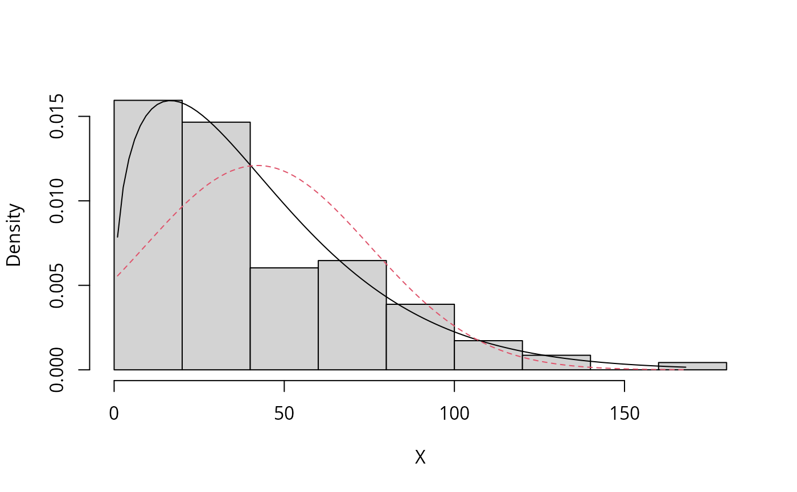

ParaEst-and-DistSel-by-ExtDist.RmdParameter estimation and distribution selections are common tasks in statistical analysis. In the context of variables acceptance sampling (see Wu and Govindaraju 2014 etc.), when the underlying distribution model of the quality characteristic is determined, the estimated quality of a product batch measured by the proportion nonconforming, is computed through the estimated parameter(s) of the underlying distribution based on a sample. Conversely, if a collection of candidate distributions are considered to be eligible, then selection of a distribution that best describes the data becomes necessary.
The package is devoted to provide a consistent and unified framework for these tasks.
library(ExtDist)Suppose we have a set of data, which has been randomly generated from a Weibull distributed population,
[1] 4.423512 2.066157 2.111723 2.062377 1.160961 2.003052It is possible to write code to obtain parameters via a maximum likelihood estimation procedure for the data. However, it is more convenient to use a single function to achieve this task.
est.par <- eWeibull(X)The \(e-\) prefix we introduced in is a logical extension to the \(d-\), \(p-\), \(q-\), \(r-\) prefixes of the distribution-related functions in R base package. Moreover, the output of \(e-\) functions is defined as a S3 class object.
class(est.par)[1] "eDist"The estimated parameters stored in the “eDist” object can be easily plugged into other \(d-\), \(p-\), \(q-\), \(r-\) functions in to get the density, percentile, quantile and random variates for a distribution with estimated parameters.
dWeibull(seq(0,2,0.4), params = est.par)
pWeibull(seq(0,2,0.4), params = est.par)
qWeibull(seq(0,1,0.2), params = est.par)
rWeibull(10, params = est.par)To remain compatible with current convention, these functions also accept the parameters as individual arguments, so the following code variations are also permissible.
As a S3 class object, several S3 methods have been developed in to extract the distribution selection criteria and other relevant information.
logLik(est.par) # log likelihood[1] -79.99344[1] 164.2422
BIC(est.par) # Bayes' Information Criterion. [1] 167.8109
MDL(est.par) # minimum description length [1] 83.03809
vcov(est.par) # variance-covariance matrix of the parameters of the fitted distribution shape scale
shape 0.06609441 0.01566200
scale 0.01566200 0.03801099Based on these criteria, for any sample, the best fitting distribution can be obtained from a list of candidate distributions. For example:
Ozone <- airquality$Ozone
Ozone <- Ozone[!is.na(Ozone)] # Removing the NA's from Ozone data
summary(Ozone) Min. 1st Qu. Median Mean 3rd Qu. Max.
1.00 18.00 31.50 42.13 63.25 168.00 [1] "Weibull"
attr(,"best.dist.par")
Parameters for the Weibull distribution.
(found using the numerical.MLE method.)
Parameter Type Estimate S.E.
shape shape 1.340187 0.09541768
scale scale 46.081330 3.37566679
attr(,"criterion.value")
Gamma Weibull Normal Exp
-Inf -542.6103 -569.6492 -549.9263 When more than one set of results are of interest for a list of candidate distribution fits, a summary table can be output by using the function DistSelCriteria.
DistSelCriteria(Ozone, candDist = c("Gamma", "Weibull", "Normal", "Exp"),
criteria = c("logLik","AIC","AICc", "BIC")) Gamma Weibull Normal Exp
logLik -Inf -542.6103 -569.6492 -549.9263
AIC Inf 1089.221 1143.298 1101.853
AICc Inf 1089.327 1143.404 1101.888
BIC Inf 1094.728 1148.805 1104.606 Multiple distributions can also be compared visually using the compareDist function.
compareDist(Ozone, attributes(best)$best.dist.par, eNormal(Ozone)) If the best fit distribution has been determined plot.eDist can provide the corresponding histogram with fitted density curve, Q-Q and P-P plot for this distribution.
plot(attributes(best)$best.dist.par)Another notable feature of the package is that it can deal with weighted samples. Weighted samples appear in many contexts, e.g.: in non-parametric and semi-parametric deconvolution (see e.g. Hazelton and Turlach 2010 etc.) the deconvoluted distribution can be represented as a pair \((Y,w)\) where \(w\) is a vector of weights with same length as \(Y\). In size-biased (unequal probability) sampling, the true population is more appropriately described by the weighted (with reciprocal of the inclusion probability as weights) observations rather than the observations themselves. In Bayesian inference, the posterior distribution can be regarded as a weighted version of the prior distribution. Weighted distributions can also play an interesting role in stochastic population dynamics.
In , the parameter estimation was conducted by maximum weighted likelihood estimation, with the estimate \(\hat{\boldsymbol{\theta}}\) of \(\boldsymbol{\theta}\) being defined by \[\begin{align}\label{eq:1} \hat{\boldsymbol{\theta}}^{w}=\arg\max_{\boldsymbol{\theta}}\sum_{i=1}^n w_i\ln f(Y_i;\boldsymbol{\theta}), \end{align}\] where \(f\) is the density function of the ditstribution to be fitted.
For example, for a weighted sample with
Y <- c(0.1703, 0.4307, 0.6085, 0.0503, 0.4625, 0.479, 0.2695, 0.2744, 0.2713, 0.2177,
0.2865, 0.2009, 0.2359, 0.3877, 0.5799, 0.3537, 0.2805, 0.2144, 0.2261, 0.4016)
w <- c(0.85, 1.11, 0.88, 1.34, 1.01, 0.96, 0.86, 1.34, 0.87, 1.34, 0.84, 0.84, 0.83, 1.09,
0.95, 0.77, 0.96, 1.24, 0.78, 1.12)the parameter estimation and distribution selection for weighted samples can be achieved by including the extra argument \(w\):
eBeta(Y,w)
Parameters for the Beta distribution.
(found using the MOM method.)
Parameter Type Estimate
shape1 shape 3.016450
shape2 shape 6.561803[1] "Normal"
attr(,"best.dist.par")
Parameters for the Normal distribution.
(found using the unbiased.MLE method.)
Parameter Type Estimate S.E.
mean location 0.3149269 0.03157766
sd scale 0.1412196 0.02290885
attr(,"criterion.value")
Beta_ab Laplace Normal
-14.76974 -17.67491 -18.10897
DistSelCriteria(Y, w, candDist = c("Beta_ab","Laplace","Normal"),
criteria = c("logLik","AIC","AICc", "BIC")) Beta_ab Laplace Normal
logLik 11.38487 10.83745 11.05448
AIC -14.76974 -17.67491 -18.10897
AICc -12.10308 -16.96903 -17.40309
BIC -10.78682 -15.68344 -16.11751